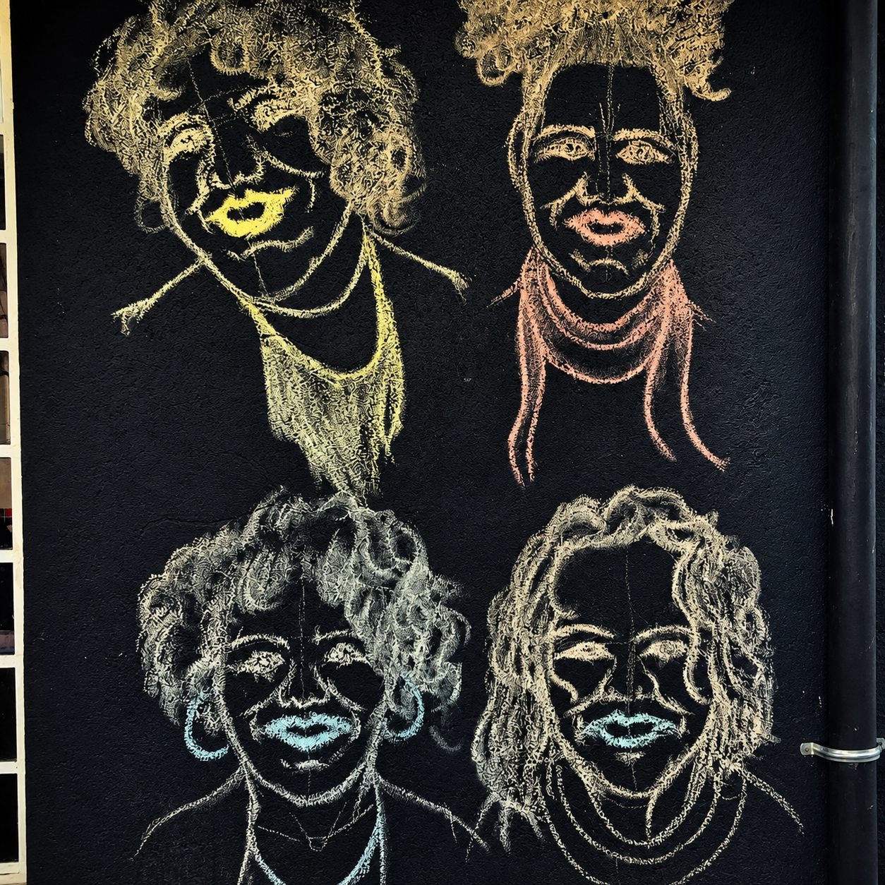

Quem Somos
Cultura, memória e identidade afro-brasileira
Associação cultural sediada em Matozinhos (MG) — Ponto de Cultura reconhecido pelo Programa Viva Cultura do Ministério da Cultura (2024).
Mais de duas décadas no interior de Minas
O Quintal das Pretas é uma associação cultural sediada em Matozinhos, Minas Gerais, que atua na promoção da cultura, da memória, da identidade afro-brasileira e do desenvolvimento comunitário por meio da arte, da educação e da valorização dos saberes populares. Com trajetória construída ao longo de mais de duas décadas, a instituição se consolidou como um espaço de encontro, criação, formação e fortalecimento de vínculos entre artistas, mestres da cultura popular e a comunidade.
Reconhecido como Ponto de Cultura pelo Programa Viva Cultura do Ministério da Cultura em 2024, o Quintal das Pretas mantém uma programação contínua e acessível, oferecendo apresentações artísticas, oficinas, rodas de conversa, ações formativas e atividades voltadas à preservação da memória e das tradições mineiras. O espaço abriga iniciativas que promovem a diversidade cultural e o acesso democrático aos bens culturais.
Entre suas principais realizações está a atuação da Cia Pé de Pano, coletivo de teatro com 30 anos de existência, responsável pela criação e circulação de espetáculos que dialogam com a história, a oralidade e a cultura popular de Minas Gerais, como Chico Rei e Caminho da Boiada. Por meio de suas ações, o Quintal das Pretas reafirma seu compromisso com a transformação social, a valorização das identidades culturais e a construção de um território mais criativo, inclusivo e participativo.
O que nos move
Promover a cultura, a memória, a identidade afro-brasileira e o desenvolvimento comunitário por meio da arte, da educação e da valorização dos saberes populares.
Memória & Ancestralidade
Preservação da memória, das tradições mineiras e da identidade afro-brasileira.
Arte & Formação
Apresentações, oficinas, rodas de conversa e ações formativas com acesso democrático aos bens culturais.
Comunidade & Transformação
Fortalecimento de vínculos e construção de um território mais criativo, inclusivo e participativo.
As mãos que cultivam o quintal
Conheça as pessoas que constroem o Quintal das Pretas, dia após dia, com arte, afeto e saberes populares.

Ita Ferreira
Atriz e Diretora Artística da Cia Pé de Pano
Adriana Ferreira
Produtora Cultural
Valéria Ferreira
Artesã e Quitandeira
Renilde Ferreira
Cozinheira e Quitandeira